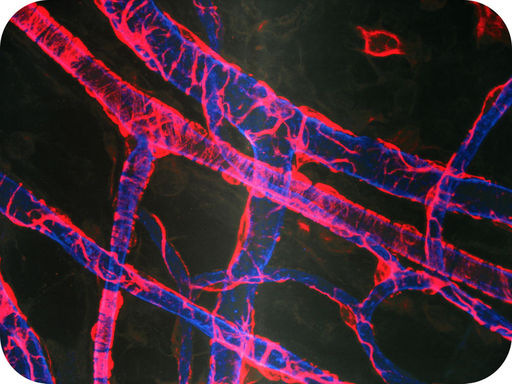
What do you think this picture represents? Does it show a network of tree branches? Interconnected pipes of a plumbing system? Actually, it is a microscopic image of tiny human blood vessels.
Blood vessels are part of the circulatory system, the “highway” system of the human body that transports materials to all of its cells. Red blood cells carry some of these materials, so they are a little like trucks on a highway. In this chapter, you will learn more about blood vessels, red blood cells, and other structures of the circulatory system.
The circulatory system can be compared to a system of interconnected, one-way roads that range from superhighways to back alleys. Like a network of roads, the job of the circulatory system is to allow the transport of materials from one place to another. As described in Figure below , the materials carried by the circulatory system include hormones, oxygen, cellular wastes, and nutrients from digested food. Transport of all these materials is necessary to maintain homeostasis of the body. The main components of the circulatory system are the heart, blood vessels, and blood. Each of these components is described in detail below.
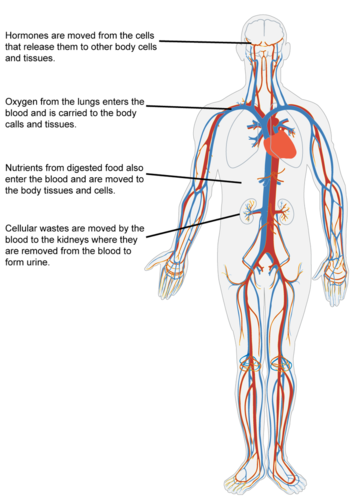
The function of the circulatory system is to move materials around the body.
The heart is a muscular organ in the chest. It consists mainly of cardiac muscle tissue and pumps blood through blood vessels by repeated, rhythmic contractions. The heart has four chambers, as shown in Figure below : two upper atria (singular, atrium) and two lower ventricles. Valves between chambers keep blood flowing through the heart in just one direction. For an animation of the structures of the heart, go to this link: http://www.youtube.com/watch?v=tEjH-xXCNe4 .
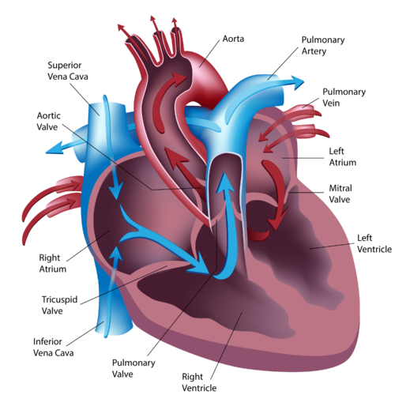
The chambers of the heart and the valves between them are shown here.
Blood flows through the heart in two separate loops, which are indicated by the arrows in Figure above . You can also watch an animation of the heart pumping blood at this link: http://www.nhlbi.nih.gov/health/dci/Diseases/hhw/hhw_pumping.html .
Unlike skeletal muscle, cardiac muscle contracts without stimulation by the nervous system. Instead, specialized cardiac muscle cells send out electrical impulses that stimulate the contractions. As a result, the atria and ventricles normally contract with just the right timing to keep blood pumping efficiently through the heart. You can watch an animation to see how this happens at this link: http://www.nhlbi.nih.gov/health/dci/Diseases/hhw/hhw_electrical.html .
Blood vessels form a network throughout the body to transport blood to all the body cells. There are three major types of blood vessels: arteries, veins, and capillaries. All three are shown in Figure below and described below.
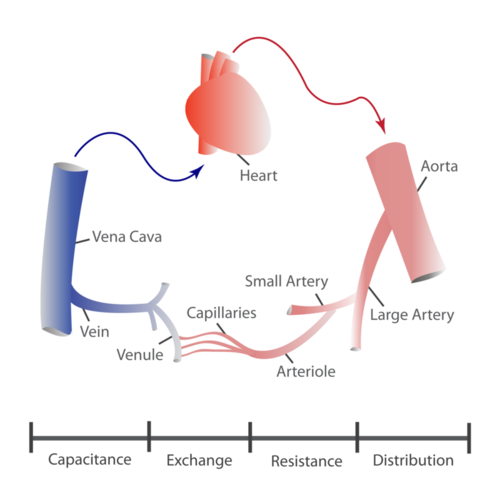
Blood vessels include arteries, veins, and capillaries.
Blood vessels help regulate body processes by either constricting (becoming narrower) or dilating (becoming wider). These actions occur in response to signals from the autonomic nervous system or the endocrine system. Constriction occurs when the muscular walls of blood vessels contract. This reduces the amount of blood that can flow through the vessels (see Figure below ). Dilation occurs when the walls relax. This increases blood flows through the vessels.
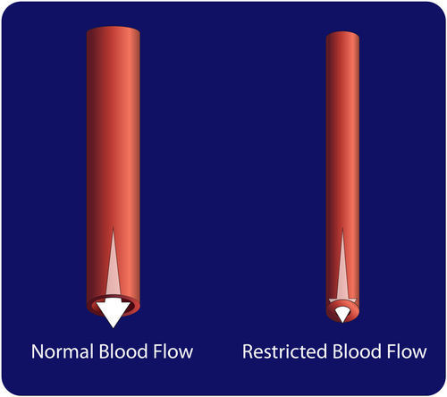
When a blood vessel constricts, less blood can flow through it.
Constriction and dilation allow the circulatory system to change the amount of blood flowing to different organs. For example, during a fight-or-flight response, dilation and constriction of blood vessels allow more blood to flow to skeletal muscles and less to flow to digestive organs. Dilation of blood vessels in the skin allows more blood to flow to the body surface so the body can lose heat. Constriction of these blood vessels has the opposite effect and helps conserve body heat.
The force exerted by circulating blood on the walls of blood vessels is called blood pressure . Blood pressure is highest in arteries and lowest in veins. When you have your blood pressure checked, it is the blood pressure in arteries that is measured. High blood pressure, or hypertension , is a serious health risk but can often be controlled with lifestyle changes or medication. You can learn more about hypertension by watching the animation at this link: http://www.healthcentral.com/high-blood-pressure/introduction-47-115.html .
The circulatory system actually consists of two separate systems: pulmonary circulation and systemic circulation. You can watch animations of both systems at the following link. http://www.pbs.org/wnet/redgold/journey/phase2_a1.html
Pulmonary circulation is the part of the circulatory system that carries blood between the heart and lungs (the term pulmonary means “of the lungs”). It is illustrated in Figure below . Deoxygenated blood leaves the right ventricle through pulmonary arteries, which transport it to the lungs. In the lungs, the blood gives up carbon dioxide and picks up oxygen. The oxygenated blood then returns to the left atrium of the heart through pulmonary veins.
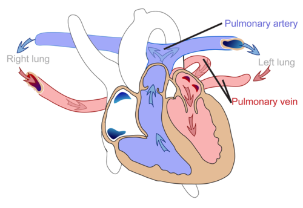
The pulmonary circulation carries blood between the heart and lungs.
Systemic circulation is the part of the circulatory system that carries blood between the heart and body. It is illustrated in Figure below . Oxygenated blood leaves the left ventricle through the aorta. The aorta and other arteries transport the blood throughout the body, where it gives up oxygen and picks up carbon dioxide. The deoxygenated blood then returns to the right atrium through veins.
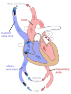
The systemic circulation carries blood between the heart and body.
Diseases of the heart and blood vessels, called cardiovascular diseases (CVD) , are very common. The leading cause of CVD is atherosclerosis.
Atherosclerosis is the buildup of plaque inside arteries (see Figure below ). Plaque consists of cell debris, cholesterol, and other substances. Factors that contribute to plaque buildup include a high-fat diet and smoking. As plaque builds up, it narrows the arteries and reduces blood flow. You can watch an animation about atherosclerosis at these links: http://www.youtube.com/watch?v=fLonh7ZesKs and http://www.youtube.com/watch?v=qRK7-DCDKEA .
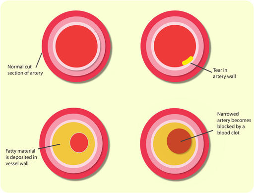
The fatty material inside the artery on the right is plaque. Notice how much narrower the artery has become. Less blood can flow through it than the normal artery.
Atherosclerosis of arteries that supply the heart muscle is called coronary heart disease. This disease may or may not have symptoms such as chest pain. As the disease progresses, there is an increased risk of heart attack. A heart attack occurs when the blood supply to part of the heart muscle is blocked and cardiac muscle fibers die. Coronary heart disease is the leading cause of death of adults in the U.S.
Many factors may increase the risk of developing coronary heart disease and other CVDs. The risk of CVDs increases with age and is greater in males than females at most ages. Having a close relative with CVD also increases the risk. These factors cannot be controlled, but other risk factors can, including smoking, lack of exercise, and high-fat diet. By making healthy lifestyle choices, you can reduce your risk of developing CVD.
Blood is a fluid connective tissue. It circulates throughout the body through blood vessels by the pumping action of the heart. Blood in arteries carries oxygen and nutrients to all the body’s cells. Blood in veins carries carbon dioxide and other wastes away from the cells to be excreted. Blood also defends the body against infection, repairs body tissues, transports hormones, and controls the body’s pH.
The fluid part of blood is called plasma . It is a watery golden-yellow liquid that contains many dissolved substances and blood cells. Types of blood cells in plasma include red blood cells, white blood cells, and platelets (see Figure below ). You can learn more about blood and its components by watching the animation What Is Blood? at this link: http://www.apan.net/meetings/busan03/materials/ws/education/demo-los/blood-rlo/whatisblood.swf .
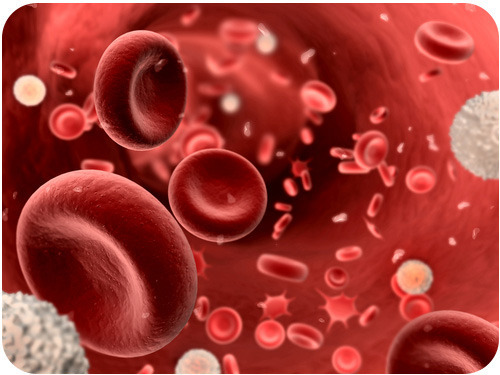
Cells in blood include red blood cells, white blood cells, and platelets.
An overview of red blood cells can be viewed at http://www.youtube.com/user/khanacademy#p/c/7A9646BC5110CF64/36/fLKOBQ6cZHA (16:30).
Click on the image above for more content
Hemoglobin is discussed in detail at http://www.youtube.com/user/khanacademy#p/c/7A9646BC5110CF64/38/LWtXthfG9_M (14:34).
Click on the image above for more content
Blood type is a genetic characteristic associated with the presence or absence of certain molecules, called antigens , on the surface of red blood cells. The most commonly known blood types are the ABO and Rhesus blood types.
Blood type is important for medical reasons. A person who needs a blood transfusion must receive blood that is the same type as his or her own. Otherwise, the transfused blood may cause a potentially life-threatening reaction in the patient’s bloodstream.
A summary of the circulatory system, blood cells and hemoglobin is available at http://www.youtube.com/user/khanacademy#p/c/7A9646BC5110CF64/37/QhiVnFvshZg (14:57).
Click on the image above for more content
1. Describe how blood flows through the heart.
2. What controls heartbeat?
3. How do arteries differ from veins?
4. What is blood pressure? What is hypertension?
5. List factors that increase the risk of cardiovascular disease.
6. Identify three types of blood cells and their functions.
7. To take your pulse, you press your fingers against an artery near the surface of the body. What are you feeling and measuring when you take your pulse? Why can’t you take your pulse by pressing your fingers against a vein?
8. People with type O blood are called “universal donors” because they can donate blood to anyone else, regardless of their ABO blood type. Explain why.
9. Compare and contrast the pulmonary and systemic circulations.
10. Explain the role of blood vessels in homeostasis.
An important function of the circulatory system is transporting oxygen to cells.
Red blood cells are like trucks that transport cargo on a highway system. Their cargo is oxygen, and the highways are blood vessels. Where do red blood cells pick up their cargo of oxygen? The answer is the lungs. The lungs are organs of the respiratory system. The respiratory system is the body system that brings air containing oxygen into the body and releases carbon dioxide into the atmosphere.
The job of the respiratory system is the exchange of gases between the body and the outside air. This process, called respiration , actually consists of two parts. In the first part, oxygen in the air is drawn into the body and carbon dioxide is released from the body through the respiratory tract. In the second part, the circulatory system delivers the oxygen to body cells and picks up carbon dioxide from the cells in return. The use of the word respiration in relation to gas exchange is different from its use in the term cellular respiration . Recall that cellular respiration is the metabolic process by which cells obtain energy by “burning” glucose. Cellular respiration uses oxygen and releases carbon dioxide. Respiration by the respiratory system supplies the oxygen and takes away the carbon dioxide.
An overview of breathing is shown at http://www.youtube.com/user/khanacademy#p/c/7A9646BC5110CF64/35/SPGRkexI_cs (20:33).
Click on the image above for more content
The organs of the respiratory system that bring air into the body are shown in Figure below . Refer to the figure as you read below about the passage of air through these organs. You can also watch a detailed animation of the respiratory system at this link: http://www.youtube.com/watch?v=HiT621PrrO0 .
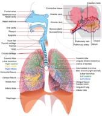
The organs of the respiratory system move air into and out of the body.
Take in a big breath of air through your nose. As you inhale, you may feel the air pass down your throat and notice your chest expand. Now exhale and observe the opposite events occurring. Inhaling and exhaling may seem like simple actions, but they are just part of the complex process of respiration, which includes these four steps:
Respiration begins with ventilation . This is the process of moving air in and out of the lungs. The lungs are the organs in which gas exchange takes place between blood and air.
Pulmonary gas exchange is the exchange of gases between inhaled air and the blood. It occurs in the alveoli of the lungs. Alveoli (singular, alveolus) are grape-like clusters surrounded by networks of thin-walled pulmonary capillaries. After you inhale, there is a greater concentration of oxygen in the alveoli than in the blood of the pulmonary capillaries, so oxygen diffuses from the alveoli into the blood across the capillaries (see Figure below ). Carbon dioxide, in contrast, is more concentrated in the blood of the pulmonary capillaries than in the alveoli, so it diffuses in the opposite direction. This link has an animation of pulmonary gas exchange: http://www.youtube.com/watch?v=Z1h29R82mVc&NR=1 .
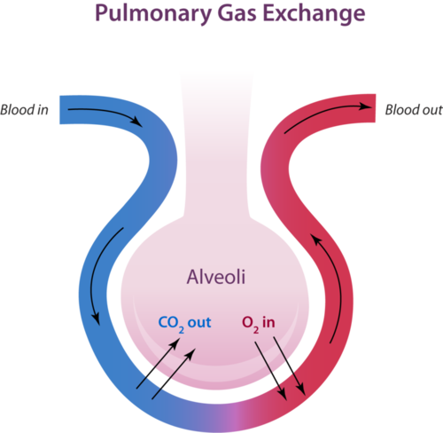
Alveoli are tiny sacs in the lungs where gas exchange takes place.
After the blood in the pulmonary capillaries becomes saturated with oxygen, it leaves the lungs and travels to the heart. The heart pumps the oxygen-rich blood into arteries, which carry it throughout the body. Eventually, the blood travels into capillaries that supply body tissues. These capillaries are called peripheral capillaries.
The cells of the body have a much lower concentration of oxygen than does the oxygenated blood in the peripheral capillaries. Therefore, oxygen diffuses from the peripheral capillaries into body cells. Carbon dioxide is produced by cells as a byproduct of cellular respiration, so it is more concentrated in the cells than in the blood of the peripheral capillaries. As a result, carbon dioxide diffuses in the opposite direction.
The carbon dioxide from body cells travels in the blood from the peripheral capillaries to veins and then to the heart. The heart pumps the blood to the lungs, where the carbon dioxide diffuses into the alveoli. Then, the carbon dioxide passes out of the body through the other structures of the respiratory system, bringing the process of respiration full circle.
Gas exchange is needed to provide cells with the oxygen they need for cellular respiration. Cells cannot survive for long without oxygen. Gas exchange is also needed to carry away carbon dioxide waste. Some of the carbon dioxide in the blood dissolves to form carbonic acid, which keeps blood pH within a normal range.
Blood pH may become unbalanced if the rate of breathing is too fast or too slow. When breathing is too fast, blood contains too little carbon dioxide and becomes too basic. When breathing is too slow, blood contains too much carbon dioxide and becomes too acidic. Clearly, to maintain proper blood pH, the rate of breathing must be regulated.
To understand how breathing is regulated, you first need to understand how breathing occurs.
Inhaling is an active movement that results from the contraction of a muscle called the diaphragm. The diaphragm is large, sheet-like muscle below the lungs (see Figure below ). When the diaphragm contracts, the ribcage expands and the contents of the abdomen move downward. This results in a larger chest volume, which decreases air pressure inside the lungs. With lower air pressure inside than outside the lungs, air rushes into the lungs. When the diaphragm relaxes, the opposite events occur. The volume of the chest cavity decreases, air pressure inside the lungs increases, and air flows out of the lungs, like air rushing out of a balloon. You can watch an animation showing how breathing occurs at this link: http://www.youtube.com/watch?v=hp-gCvW8PRY&feature=related .
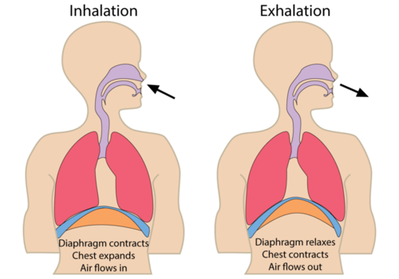
Breathing depends on contractions of the diaphragm.
The regular, rhythmic contractions of the diaphragm are controlled by the brain stem. It sends nerve impulses to the diaphragm through the autonomic nervous system. The brain stem monitors the level of carbon dioxide in the blood. If the level becomes too high, it “tells” the diaphragm to contract more often. Breathing speeds up, and the excess carbon dioxide is released into the air. The opposite events occur when the level of carbon dioxide in the blood becomes too low. In this way, breathing keeps blood pH within a narrow range.
When you have a cold, your nasal passages may become so congested that it’s hard to breathe through your nose. Many other diseases also affect the respiratory system, most of them more serious than the common cold. The following list includes just a sample of respiratory system diseases.
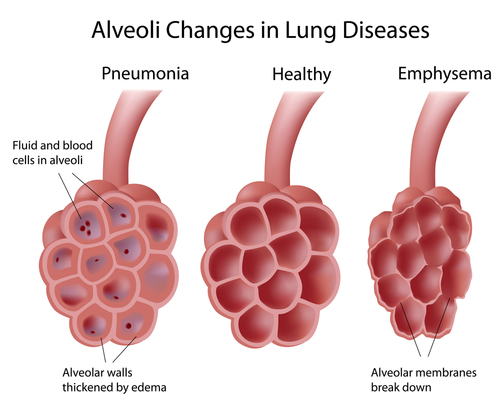
Pneumonia and emphysema are caused by damage to the alveoli of the lungs.
Beginning in September 2012, the U.S. Food and Drug Administration will require larger, more prominent cigarette health warnings on all cigarette packaging and advertisements in the United States. These warnings are a significant advancement in communicating the dangers of smoking. These new cigarette health warnings contains nine different warnings that will increase awareness of the specific health risks associated with smoking, such as death, addiction, lung disease, cancer, stroke and heart disease. These warnings include:
See http://www.fda.gov/TobaccoProducts/Labeling/CigaretteWarningLabels/default.htm for additional information.
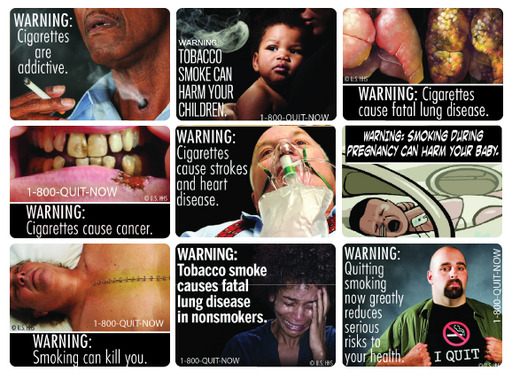
Cigarette warning labels unveiled on 6/21/2011 by the U.S. Food and Drug Administration.
1. What is respiration? What is ventilation?
2. How is respiration different from cellular respiration?
3. Outline the pathway of a breath of air from the nose to the alveoli.
4. Describe how pulmonary gas exchange occurs.
5. Identify three diseases of the respiratory system, and state what triggers or causes each disease.
6. Sometimes people who are feeling anxious breathe too fast and become lightheaded. This is called hyperventilation. Hyperventilation can upset the pH balance of the blood, resulting in blood that is too basic. Explain why.
7. Compare and contrast pulmonary and peripheral gas exchange.
8. Explain why contraction of the diaphragm causes the lungs to fill with air.
9. Explain how the rate of breathing is controlled.
Oxygen is just one substance transported by the blood. The blood also transports nutrients such as glucose.
The respiratory and circulatory systems work together to provide cells with the oxygen they need for cellular respiration. Cells also need glucose for cellular respiration. Glucose is a simple sugar that comes from the food we eat. To get glucose from food, digestion must occur. This process is carried out by the digestive system.
The digestive system consists of organs that break down food and absorb nutrients such as glucose. Organs of the digestive system are shown in Figure below . Most of the organs make up the gastrointestinal tract. The rest of the organs are called accessory organs.
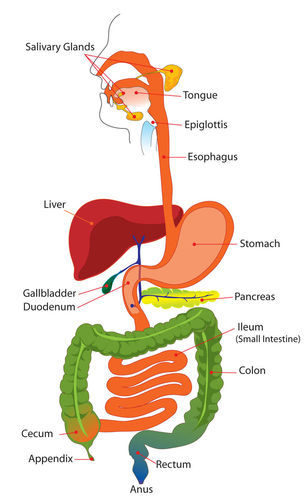
The digestive system includes organs from the mouth to the anus.
The following interactive animation demonstrates the flow of food through the gastrointestinal (GI) system.
Click on the image above for more content
The gastrointestinal (GI) tract is a long tube that connects the mouth with the anus. It is more than 9 meters (30 feet) long in adults and includes the esophagus, stomach, and small and large intestines. Food enters the mouth, passes through the other organs of the GI tract, and then leaves the body through the anus. At the following link, you can watch an animation that shows what happens to food as it passes through the GI tract. http://www.youtube.com/watch?v=lm3oIX6jjn4
The organs of the GI tract are lined with mucous membranes that secrete digestive enzymes and absorb nutrients. The organs are also covered by layers of muscle that enable peristalsis. Peristalsis is an involuntary muscle contraction that moves rapidly along an organ like a wave (see Figure below ). You can watch an animation of peristalsis at this link: http://en.wikipedia.org/wiki/File:Peristalsis.gif .
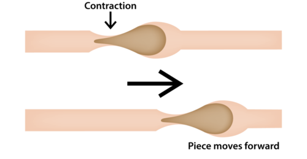
Peristalsis pushes food through the GI tract.
Other organs involved in digestion include the liver, gall bladder, and pancreas. They are called accessory organs because food does not pass through them. Instead, they secrete or store substances needed for digestion.
The digestive system has three main functions: digestion of food, absorption of nutrients, and elimination of solid food waste. Digestion is the process of breaking down food into components the body can absorb. It consists of two types of processes: mechanical digestion and chemical digestion.
After food is digested, the resulting nutrients are absorbed. Absorption is the process in which substances pass into the bloodstream, where they can circulate throughout the body. Absorption of nutrients occurs mainly in the small intestine. Any remaining matter from food that cannot be digested and absorbed passes into the large intestine as waste. The waste later passes out of the body through the anus in the process of elimination .
Does the sight or aroma of your favorite food make your mouth water? When this happens, you are getting ready for digestion.
The mouth is the first digestive organ that food enters. The sight, smell, or taste of food stimulates the release of digestive enzymes by salivary glands inside the mouth. The major salivary enzyme is amylase. It begins the chemical digestion of carbohydrates by breaking down starch into sugar.
The following interactive animation demonstrates the chewing and swallowing process.
Click on the image above for more content
The mouth also begins the process of mechanical digestion. Sharp teeth in the front of the mouth cut or tear food when you bite into it (see Figure below ). Broad teeth in the back of the mouth grind food when you chew. Food is easier to chew because it is moistened by saliva from the salivary glands. The tongue helps mix the food with saliva and also helps you swallow. After you swallow, the chewed food passes into the pharynx.
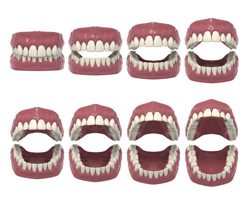
Teeth are important for mechanical digestion.
From the pharynx, the food moves into the esophagus. The esophagus is a long, narrow tube that passes food from the pharynx to the stomach by peristalsis. The esophagus has no other digestive functions. At the end of the esophagus, a muscle called a sphincter controls the entrance to the stomach. The sphincter opens to let food into the stomach and then closes again to prevent food from passing back into the esophagus.
The stomach is a sac-like organ in which food is further digested both mechanically and chemically. (To see an animation of how the stomach digests food, go to the link below.) Churning movements of the stomach’s thick, muscular walls complete the mechanical breakdown of food. The churning movements also mix food with digestive fluids secreted by the stomach. One of these fluids is hydrochloric acid. It kills bacteria in food and gives the stomach the low pH needed by digestive enzymes that work in the stomach. The main enzyme is pepsin, which chemically digests protein. See http://www.youtube.com/watch?v=URHBBE3RKEs&feature=related for additional information.
The stomach stores the partly digested food until the small intestine is ready to receive it. When the small intestine is empty, a sphincter opens to allow the partially digested food to enter the small intestine.
The following interactive animation demonstrates the processes that occur in the stomach.
Click on the image above for more content
The small intestine is a narrow tube about 7 meters (23 feet) long in adults. It is the site of most chemical digestion and virtually all absorption. The small intestine consists of three parts: the duodenum, jejunum, and ileum (see Figure above ).
The duodenum is the first and shortest part of the small intestine. Most chemical digestion takes place here, and many digestive enzymes are active in the duodenum (see Table below ). Some are produced by the duodenum itself. Others are produced by the pancreas and secreted into the duodenum. To see animations about digestive enzymes in the duodenum, use these links: http://www.youtube.com/watch?v=bNMsNHqxszc&feature=related (0:40) and http://www.youtube.com/watch?v=IxNpXO8gGFM (2:45).
| Enzyme | What It Digests | Where It Is Made |
|---|---|---|
| Amylase | carbohydrates | pancreas |
| Trypsin | proteins | pancreas |
| Lipase | lipids | pancreas, duodenum |
| Maltase | carbohydrates | duodenum |
| Peptidase | proteins | duodenum |
The liver is an organ of both digestion and excretion. It produces a fluid called bile , which is secreted into the duodenum. Some bile also goes to the gall bladder , a sac-like organ that stores and concentrates bile and then secretes it into the small intestine. In the duodenum, bile breaks up large globules of lipids into smaller globules that are easier for enzymes to break down. Bile also reduces the acidity of food entering from the highly acidic stomach. This is important because digestive enzymes that work in the duodenum need a neutral environment. The pancreas contributes to the neutral environment by secreting bicarbonate, a basic substance that neutralizes acid.
The jejunum is the second part of the small intestine, where most nutrients are absorbed into the blood. As shown in Figure below , the mucous membrane lining the jejunum is covered with millions of microscopic, fingerlike projections called villi (singular, villus). Villi contain many capillaries, and nutrients pass from the villi into the bloodstream through the capillaries. Because there are so many villi, they greatly increase the surface area for absorption. In fact, they make the inner surface of the small intestine as large as a tennis court! You can watch an animation of absorption across intestinal villi at this link: http://www.youtube.com/watch?v=P1sDOJM65Bc&feature=related .
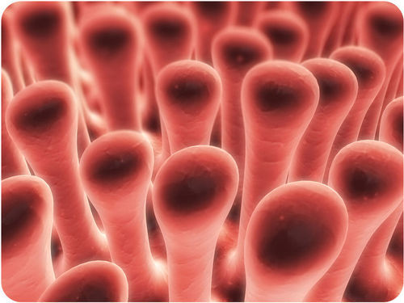
This image shows intestinal villi greatly magnified. They are actually microscopic.
The ileum is the third part of the small intestine. A few remaining nutrients are absorbed here. Like the jejunum, the inner surface of the ileum is covered with villi that increase the surface area for absorption.
From the small intestine, any remaining food wastes pass into the large intestine. The large intestine is a relatively wide tube that connects the small intestine with the anus. Like the small intestine, the large intestine also consists of three parts: the cecum (or caecum), colon, and rectum. Follow food as it moves through the digestive system at http://www.youtube.com/watch?v=Uzl6M1YlU3w&feature=related (1:37).
The digestive system song Where Will I Go can be heard at http://www.youtube.com/watch?v=OYWVbt6t2mw&feature=related (3:27).
The following interactive animation demonstrates how the gastrointestinal (GI) system eliminates waste.
Click on the image above for more content
The cecum is the first part of the large intestine, where wastes enter from the small intestine. The wastes are in a liquid state. As they passes through the colon, which is the second part of the large intestine, excess water is absorbed. The remaining solid wastes are called feces . Feces accumulate in the rectum, which is the third part of the large intestine. As the rectum fills, the feces become compacted. After a certain amount of feces accumulate, they are eliminated from the body. A sphincter controls the anus and opens to let feces pass through.
Trillions of bacteria normally live in the large intestine. Most of them are helpful. In fact, we wouldn’t be able to survive without them. Some of the bacteria produce vitamins, which are absorbed by the large intestine. Other functions of intestinal bacteria include:
Many diseases can affect the digestive system. Three of the most common are food allergies, ulcers, and heartburn.
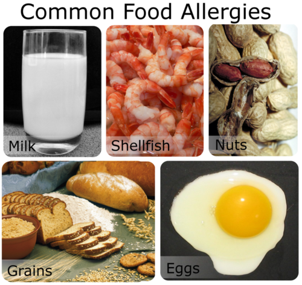
These foods are the most common causes of food allergies.
Hepatitis C is a virus that causes cirrhosis of the liver and liver cancer. It’s the leading cause for liver transplants in the U.S., and an estimated 4 million Americans have the disease. Current treatments are difficult to tolerate and are often ineffective, but recent breakthroughs from scientists may soon produce a cure for the disease that claims more than 10,000 American lives each year. See http://www.kqed.org/quest/television/hepatitis-c-the-silent-epidemic for additional information.
Click on the image above for more content
Did you ever hear the saying, “You are what you eat”? It’s not just a saying. It’s actually true. What you eat plays an important role in your health. Eating a variety of the right types of foods promotes good health and provides energy for growth and activity. This is because healthful foods are rich in nutrients. Nutrients are substances the body needs for energy, building materials, and control of body processes. There are six main classes of nutrients: carbohydrates, proteins, lipids, water, vitamins, and minerals. These six classes are categorized as macronutrients or micronutrients depending on how much of them the body needs.
Nutrients the body needs in relatively large amounts are called macronutrients . They include carbohydrates, proteins, lipids, and water. All macronutrients except water can be used by the body for energy. (The energy in food is measured in a unit called a Calorie.) The exact amount of each macronutrient that an individual needs depends on many factors, including gender and age. Recommended daily intakes by teens of three macronutrients are shown in Table below . Based on your gender and age, how many grams of proteins should you eat each day?
| Gender/Age | Carbohydrates (g/day) | Proteins (g/day) | Water (L/day) (includes water in food) |
|---|---|---|---|
| Males 9–13 years | 130 | 34 | 2.4 |
| Males 14-18 years | 130 | 52 | 3.3 |
| Females 9-13 years | 130 | 34 | 2.1 |
| Females 14-18 years | 130 | 46 | 2.3 |
Nutrients the body needs in relatively small amounts are called micronutrients . They include vitamins and minerals. Vitamins are organic compounds that are needed by the body to function properly. Several vitamins are described in Table {{ref table|table:vitamins|below}. Vitamins play many roles in good health, ranging from maintaining good vision to helping blood clot. Vitamin B12 is produced by bacteria in the large intestine. Vitamin D is synthesized by the skin when it is exposed to UV light. Most other vitamins must be obtained from foods like those listed in Table below .
| Vitamin | Function | Good Food Sources |
|---|---|---|
| A | good vision | carrots, spinach |
| B12 | normal nerve function | meat, milk |
| C | making connective tissue | oranges, red peppers |
| D | healthy bones and teeth | salmon, eggs |
| E | normal cell membranes | vegetable oils, nuts |
| K | blood clotting | spinach, soybeans |
Minerals are chemical elements that are essential for body processes. They include calcium, which helps form strong bones and teeth, and potassium, which is needed for normal nerve and muscle function. Good sources of minerals include green leafy vegetables, whole grains, milk, and meats. Vitamins and minerals do not provide energy, but they are still essential for good health. The needed amounts generally can be met with balanced eating. However, people who do not eat enough of the right foods may need vitamin or mineral supplements.
Balanced eating is a way of eating that promotes good health. It means eating the right balance of different foods to provide the body with all the nutrients it needs. Fortunately, you don’t need to measure and record the amounts of different nutrients you each day in order to balance your eating. Instead, you can use MyPlate and food labels.
MyPyramid shows the relative amounts of foods in different food groups you should eat each day (see Figure below ).
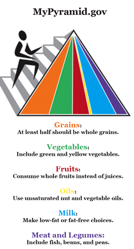
MyPyramid is a visual guideline for balanced eating.
Each food group represented by a colored band in MyPyramid is a good source of nutrients. The key in Figure above shows the food group each band represents. The wider the band, the more you should eat from that food group. The white tip of MyPyramid represents foods that should be eaten only once in awhile, such as ice cream and potato chips. They contain few nutrients and may contribute excess Calories to the diet. The figure “walking” up the side of MyPyramid represents the role of physical activity in balanced eating. Regular exercise helps you burn any extra energy that you consume in foods and provides many other health benefits. You should be active for about an hour a day most days of the week. The more active you are, the more energy you will use.
In June 2011, the United States Department of Agriculture replaced My Pyramid with MyPlate. MyPlate depicts the relative daily portions of various food groups. See http://www.choosemyplate.gov/ for further information.
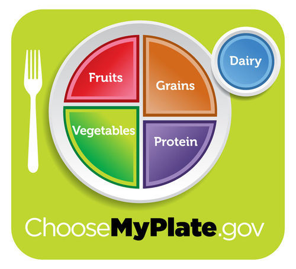
MyPlate is a visual guideline for balanced eating, replacing MyPyramid in 2011.
The following guidelines accompany MyPlate:
1. Balancing Calories
2. Foods to Increase
3. Foods to Reduce
Packaged foods are required by law to carry a nutrition facts label, like the one in Figure below . The labels show the nutrient content and ingredients of foods. Reading labels can help you choose foods that are high in nutrients you need more of (such as proteins) and low in nutrients you need less of (such as fats).
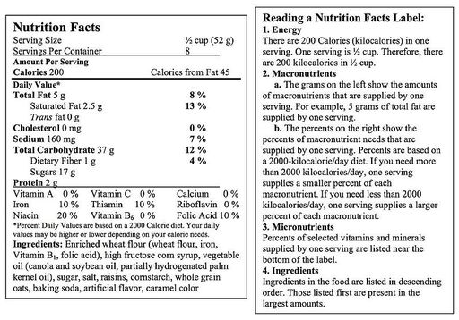
Nutrition facts labels like this one can help you make good food choices.
You should also look for ingredients such as whole grains, vegetables, and fruits. Avoid foods that contain processed ingredients, such as white flour or white rice. Processing removes nutrients. As a result, processed foods generally supply fewer nutrients than whole foods, even when they have been enriched or fortified with added nutrients.
Any unused energy in food—whether it comes from carbohydrates, proteins, or lipids—is stored in the body as fat. An extra 3,500 Calories of energy results in the storage of almost half a kilogram (1 pound) of stored body fat. People who consistently consume more food energy then they need may become obese. Obesity occurs when the body mass index is 30.0 kg/m 2 or greater. Body mass index (BMI) is an estimate of the fat content of the body. It is calculated by dividing a person’s weight (in kilograms) by the square of the person’s height (in meters). Obesity increases the risk of health problems such as type 2 diabetes and hypertension.
Some people who are obese have an eating disorder, called binge eating disorder, in which they compulsively overeat. An eating disorder is a mental illness in which people feel compelled to eat in a way that causes physical, mental, and emotional health problems. Other eating disorders include anorexia nervosa and bulimia nervosa. Treatments for eating disorders include counseling and medication.
Click on the image above for more content
Click on the image above for more content
Click on the image above for more content
1. What organs make up the gastrointestinal tract? What are the accessory organs of digestion?
2. Describe peristalsis and its role in digestion.
3. Define mechanical and chemical digestion.
4. Describe functions of the stomach.
5. Where are most nutrients absorbed?
6. What role do villi play in absorption?
7. How do bacteria in the large intestine help keep us healthy?
8. Describe two diseases of the digestive system.
9. What is an eating disorder? Give an example.
10. Assume that a person has a disease that prevents the pancreas from secreting digestive enzymes. Explain how digestion might be affected.
11. Aleesha weighs 80 kg and is 1.6 m tall. What is her body mass index? Is she obese?
12. Compare and contrast macronutrients and micronutrients.
13. Explain how to use MyPyramid and food labels to choose foods for balanced eating.
In this lesson, you learned that the large intestine eliminates solid wastes that are left after digestion occurs.
If you exercise on a hot day, you are likely to lose a lot of water in sweat. Then, for the next several hours, you may notice that you do not pass urine as often as normal and that your urine is darker than usual. Do you know why this happens? Your body is low on water and trying to reduce the amount of water lost in urine. The amount of water lost in urine is controlled by the kidneys, the main organs of the excretory system.
Excretion is the process of removing wastes and excess water from the body. It is one of the major ways the body maintains homeostasis. Although the kidneys are the main organs of excretion, several other organs also excrete wastes. They include the large intestine, liver, skin, and lungs. All of these organs of excretion, along with the kidneys, make up the excretory system . This lesson focuses on the role of the kidneys in excretion. The roles of the other excretory organs are summarized below:
The kidneys are part of the urinary system , which is shown in Figure below . The main function of the urinary system is to filter waste products and excess water from the blood and excrete them from the body.
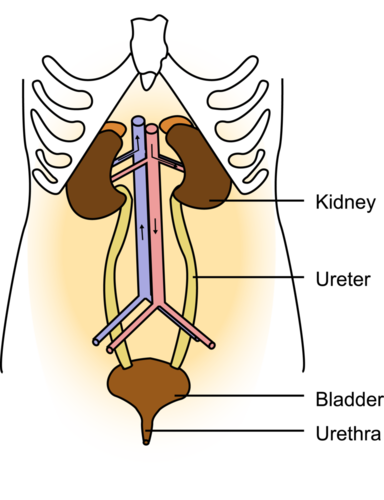
The kidneys are the chief organs of the urinary system.
The kidneys are a pair of bean-shaped organs just above the waist. A cross-section of a kidney is shown in Figure below . The function of the kidney is to filter blood and form urine. Urine is the liquid waste product of the body that is excreted by the urinary system. Nephrons are the structural and functional units of the kidneys. A single kidney may have more than a million nephrons!
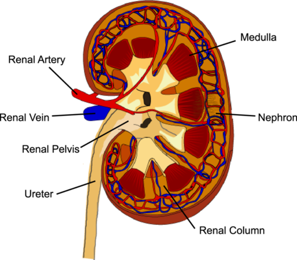
Each kidney is supplied by a renal artery and renal vein.
The kidney and nephron are discussed at http://www.youtube.com/user/khanacademy#p/c/7A9646BC5110CF64/57/cc8sUv2SuaY (18:38).
Click on the image above for more content
Additional information about the nephron is shown at http://www.youtube.com/user/khanacademy#p/c/7A9646BC5110CF64/58/czY5nyvZ7cU .
Click on the image above for more content
As shown in Figure below , each nephron is like a tiny filtering plant. It filters blood and forms urine in the following steps:
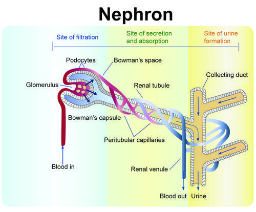
The parts of a nephron and their functions are shown in this diagram.
From the collecting ducts of the kidneys, urine enters the ureters , two muscular tubes that move the urine by peristalsis to the bladder (see Figure above ). The bladder is a hollow, sac-like organ that stores urine. When the bladder is about half full, it sends a nerve impulse to a sphincter to relax and let urine flow out of the bladder and into the urethra. The urethra is a muscular tube that carries urine out of the body. Urine leaves the body through another sphincter in the process of urination . This sphincter and the process of urination are normally under conscious control.
The kidneys play many vital roles in homeostasis. They filter all the blood in the body many times each day and produce a total of about 1.5 liters of urine. The kidneys control the amount of water, ions, and other substances in the blood by excreting more or less of them in urine. The kidneys also secrete hormones that help maintain homeostasis. Erythropoietin, for example, is a kidney hormone that stimulates bone marrow to produce red blood cells when more are needed. The kidneys themselves are also regulated by hormones. For example, antidiuretic hormone from the hypothalamus stimulates the kidneys to produce more concentrated urine when the body is low on water.
A person can live a normal, healthy life with just one kidney. However, at least one kidney must function properly to maintain life. Diseases that threaten the health and functioning of the kidneys include kidney stones, infections, and diabetes.
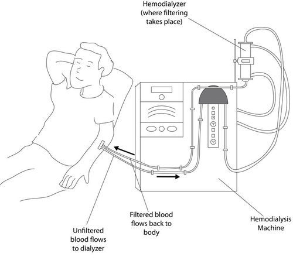
A dialysis machine filters a patient’s blood.
1. What is excretion?
2. List organs of the excretory system and their functions.
3. Describe how nephrons filter blood and form urine.
4. State the functions of the ureters, bladder, and urethra.
5. Tom was seriously injured in a car crash. As a result, he had to have one of his kidneys removed. Does Tom need dialysis? Why or why not?
6. Explain how the kidneys maintain homeostasis.
Infections caused by microorganisms may affect any of the organ systems described in this chapter. For example, you have just read that bacterial infections of the bladder are common.
Opening image by Peter Eimon [Flickr: hyperion327]. http://www.flickr.com/photos/pmeimon/5737742961/in/photostream/ . CC-BY-NC-SA 2.0.
{kind=link}
{kind=link}
{kind=link}
{kind=link}
%20http://www.flickr.com/photos/striatic/131012552/;%20(Shellfish)%20http://commons.wikimedia.org/wiki/File:Garnelen_im_Verkauf_fcm.jpg;%20(Nuts)%20http://commons.wikimedia.org/wiki/File:Peanuts.jpg;%20Grains)%20http://commons.wikimedia.org/wiki/File:Various_grains.jpg;%20(Egg)%20http://commons.wikimedia.org/wiki/File:Fried_egg,_sunny_side_up.jpg){kind=link}
{kind=link}
{kind=link}